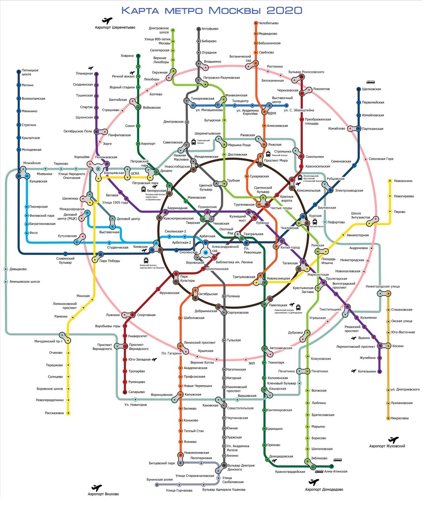

Московский метрополитен (московское метро) — рельсовый внеуличный (преимущественно подземный) городской общественный транспорт на электрической тяге, находящийся в Москве и частично в Московской области. Является исторически первым и крупнейшим метрополитеном в СССР, России и странах СНГ. Московское метро — шестое в мире по интенсивности использования после метрополитенов Пекина, Токио, Шанхая, Сеула и Гуанчжоу; четвёртое в мире и первое в Европе — по длине эксплуатируемых линий. Эксплуатацию метрополитена осуществляет ГУП «Московский метрополитен» (полное название: государственное унитарное предприятие города Москвы «Московский ордена Ленина и ордена Трудового Красного Знамени метрополитен имени В. И. Ленина»).
Первая линия открылась 15 мая 1935 года и шла от станции «Сокольники» до станции «Охотный Ряд» с ответвлением на «Парк культуры» и «Смоленскую».
Состоит из 14 линий общей протяжённостью 408,1 км в двухпутном исчислении без учёта монорельса, МЦК и МЦД. В Московском метрополитене 233 действующие станции, 1 законсервированная («Деловой центр») и 4 реконструируемых («Смоленская», «Каховская», «Варшавская» и частично закрытая «Каширская»). 48 станций признаны объектами культурного наследия, а более 40 являются памятниками архитектуры.
К 2023 году по планам правительства Москвы должны быть построены ещё 27 станций и 67 километров новых линий.
Метрополитен первоначально носил имя Л. М. Кагановича, с 29 ноября 1955 года носит имя В. И. Ленина, в 1990-х и 2000-х годах оно использовалось не на всех станциях, хотя официально вопрос о снятии имени Ленина никогда не возникал. В 2014 году с инициативой убрать имя Ленина из названия метрополитена и его станций выступало московское отделение партии «Яблоко». В 2016 году руководство метрополитена заявило о намерении вернуть на все станции метро, где проходит реконструкция, таблички с названием станций со словами «Метрополитен им. Ленина».
15 июня 1931 года на Пленуме ЦК ВКП(б) после доклада первого секретаря Московского горкома партии Лазаря Кагановича было принято решение о строительстве Московского метрополитена, чтобы улучшить транспортную обстановку в городе и частично разгрузить трамвайные линии. В ноябре 1931 года началось строительство первого опытного участка на Русаковской улице. В ходе проектирования возник спор о типе будущих станций метро: будут ли они иметь островные или боковые платформы. В итоге было решено остановиться на варианте трёхсводчатой станции с островной платформой. Для подъёма пассажиров на поверхность предполагалось использовать эскалаторы. Московский инженер В. Л. Маковский обосновал возможность и необходимость прокладки в сложных условиях московских грунтов тоннелей глубокого заложения.
В 1933 году был утверждён технический проект первой очереди метрополитена, тогда же трест Метрострой начал основные строительные работы. Маршрут первой очереди был определён путём исследования пассажиропотоков московского трамвая: подземкой решили повторить самые напряжённые его маршруты.
Участки линии от «Сокольников» до «Комсомольской» и от «Библиотеки имени Ленина» до «Парка культуры» сооружались открытым способом. Тоннели между станциями «Александровский сад» и «Смоленская» возводились траншейным способом. На участке глубокого заложения от «Охотного Ряда» до «Площади Дзержинского» был применён английский метод щитовой проходки.
Для обеспечения темпов строительства, требовавших немедленного привлечения десятков тысяч рабочих, взять которых было неоткуда, а мотивировать нечем (в стране и без того накануне повсеместно бушевал голод, о каких-либо дополнительных «стимулах» не могло быть и речи), подразделения НКВД были спешно ориентированы на обеспечение стройки неквалифицированной рабсилой в требуемых количествах из числа заключённых ИТЛ. В результате, основной объём строительных работ выполнялся принудительным трудом заключённых. Штат «вольнонаёмных» работников комплектовался методом «комсомольского призыва», иначе называемого «вербовкой». К проведению доводочных работ, — отделочно-декоративных, прокладки кабельной сети и др., — привлекались квалифицированные европейские и американские рабочие и техники. 4 февраля 1935 года прошёл первый пробный поезд.
Московский метрополитен был открыт 15 мая 1935 года. Первым официальным пассажиром стал герой труда с завода «Красный пролетарий» Пётр Николаевич Латышев, который купил 15 мая 1935 года в кассе открывшейся станции «Сокольники» билет № 1 серии «А». Пусковой комплекс включал в себя 11,2 км трассы, 13 станций и 12 составов. Первая очередь шла от станции «Сокольники» до станции «Парк культуры», с ответвлением на «Смоленскую». Данное ответвление, ставшее Филёвской линией, в 1937 году дошло до станции «Киевская», пересекая при этом Москву-реку по мосту. До начала Великой Отечественной войны были открыты ещё две линии. В марте 1938 года Арбатская линия была продлена до станции «Курская» (теперь этот участок относится к Арбатско-Покровской линии). В сентябре 1938 года открылась Горьковско-Замоскворецкая линия — от станции «Сокол» до станции «Площадь Свердлова» (с 1990 года «Театральная»).
Во время Великой Отечественной войны метро использовалось как бомбоубежище. За время авианалётов в метро родилось 217 детей.
15 октября 1941 года лично от Л. М. Кагановича поступил приказ закрыть Московский метрополитен, в течение 3 часов подготовить предложения по его уничтожению как стратегически важного объекта. Метро предполагалось уничтожить, а оставшиеся вагоны и оборудование вывезти. Утром 16 октября 1941 года в день паники в Москве метрополитен впервые не был открыт. Это был единственный день в истории московского метро, когда оно не работало. К вечеру приказ об уничтожении метро был отменён.
Строительство третьей очереди Московского метрополитена началось ещё до начала Великой Отечественной войны, в 1940 году. В первые месяцы войны строительство было заморожено, однако возобновилось уже в мае 1942 года, после отвода угрозы захвата Москвы. Были введены в строй два отрезка пути: в январе 1943 года — «Площадь Свердлова» — «Завод имени Сталина» (с 1956 года «Автозаводская») (с пересечением Москвы-реки в глубоком тоннеле; станции «Павелецкая» и «Новокузнецкая» были открыты позже, в ноябре 1943 года), а в январе 1944 года — «Курская» — «Измайловский парк» (с 2005 года «Партизанская») (4 станции). На 7 станциях, построенных в военное время, имеются памятные таблички «Сооружено в дни Отечественной войны».
После войны началось строительство четвёртой очереди метрополитена — Кольцевой линии и глубокой части Арбатской линии от «Площади Революции» до «Киевской». Кольцевую линию первоначально предполагали строить под Садовым кольцом. Первая очередь линии — от «Парка культуры» до «Курской» (1950) расположена как раз под Садовым кольцом. Но позже было решено строить северную часть Кольцевой линии за пределами Садового кольца, таким образом обеспечивая доступ к семи из девяти вокзалов столицы. Вторая очередь Кольцевой линии открылась в 1952 году («Курская» — «Белорусская»), а в 1954 году строительство линии было завершено.
В январе 1952 года была образована Проектная контора, ставшая с 1971 года Проектно-конструкторским бюро Московского метрополитена.
Строительство глубокой части Арбатской линии было связано с началом холодной войны. Станции глубокого заложения должны были служить бомбоубежищами в случае ядерной войны. После завершения строительства линии в 1953 году верхняя часть линии (от «Калининской» до «Киевской») была закрыта, но в 1958 году открылась вновь как часть Филёвской линии.
С 12 декабря 1951 года в поездах метро стали объявлять станции. Сначала станции объявлялись машинистом. Первый поезд, в котором объявляли станции, прошёл по участку «Сокол» — «Площадь Свердлова». С февраля по октябрь 1953 года на Кольцевой линии впервые прошло испытание системы громкоговорящего оповещения пассажиров. С 29 декабря 1953 года на Кольцевой линии все поезда оборудованы системой громкоговорящего оповещения. С 1972 года поезда оборудованы системой оповещения на всех линиях.
С 1955 года в связи с постановлением ЦК КПСС и Совета министров СССР «Об устранении излишеств в проектировании и строительстве» упор в развитии метрополитена был сделан на увеличение темпов строительства за счёт удешевления строительства станций. На каждую станцию стали выделять определённую сумму, и в неё необходимо было уложиться. От дорогих индивидуальных проектов каждой станции стали переходить к более дешёвым типовым проектам. Последними станциями, построенными в классическом сталинском стиле, стали «Фрунзенская» и «Спортивная», открытые 1 мая 1957 года.
В конце 1950-х и в 1960-е годы развивалась концепция радиусов, соединённых лишь с Кольцевой линией: в 1958 году открылся Рижский радиус, в 1962 году — Калужский, в 1966 году — Ждановский, в 1972 году — Краснопресненский. Лишь в 1971 и 1975 годах соответственно радиусы были объединены в диаметральные линии — Калужско-Рижскую и Ждановско-Краснопресненскую. С конца 1970-х по начало 1990-х введены Калининская (1979—1986) и Серпуховско-Тимирязевская (1983—1994) линии, которые были построены по подобному проекту, сначала как радиус от кольца с постепенным продлением в обратном направлении, через центр, с образованием нового диаметра. В середине 1980-х годов появляется концепция скоростных хордовых линий метро, ведущих в спальные районы и аэропорты за пределами МКАД. Позднее вследствие снижения финансирования метрополитена эти планы были отложены на неопределённый срок.
В последние годы существования СССР началось строительство Люблинской линии.
Так как Метрополитен организационно входил в состав НКПС (МПС) СССР, всем служащим Метрополитена была установлена форма общего состава НКПС СССР — со всеми дальнейшими изменениями.
В 1975 году Московский метрополитен перешёл в ведение Главного управления метрополитенов Министерства путей сообщения.
В 1992—1994 годах был достроен северный участок Серпуховско-Тимирязевской линии, от «Отрадного» до «Алтуфьева» (с промежуточной станцией «Бибирево»). В 1995 году была открыта Люблинская линия, запроектированная ещё в середине 1980-х. В середине 1990-х появились новые проекты развития скоростного транспорта Москвы: лёгкое метро, монорельс, мини-метро и скоростная транспортная система. В 2000—2001 годах был достроен южный участок Серпуховско-Тимирязевской линии, от «Улицы Академика Янгеля» до «Аннина». В конце 2002 года была открыта конечная станция «Бульвар Дмитрия Донского», впервые выведшая метро за пределы МКАД, оставаясь при этом на территории Москвы (район Северное Бутово). В 2003 году была открыта Бутовская линия, в то время полностью расположенная за МКАДПерейти к разделу «Лёгкое метро». В 2004 году была построена линия монорельса. Реализовывался также проект мини-метро изначально как частное ответвление от станции «Киевская» Филёвской линии в сторону делового центра «Москва-Сити». Оно должно было иметь кривые меньшего радиуса, более крутые подъёмы и более короткие платформы по сравнению с обычным метрополитеном. Однако затем от концепции мини-метро отказались, и в итоге в 2005 году было построено простое ответвление с двумя станциями: «Выставочная» и «Международная».
В 2003—2009 годах Арбатско-Покровская линия продлевается от станции «Киевская» до «Митино», включая в себя участок Филёвской линии. На этой линии появляется первая станция на территории Московской области и одновременно первая станция, построенная на частные деньги, — «Мякинино». В 2007—2010 годах Люблинско-Дмитровская линия была продлена через центр города до станции «Марьина Роща».
15 мая 2010 года Московскому метрополитену исполнилось 75 лет. В честь юбилея на всех станциях установлены памятные доски, на которых указана дата открытия станции и имя архитектора. Однако при оформлении досок были допущены разночтения с данными, опубликованными на официальном сайте метрополитена, большая часть таковых связана с разночтениями в датах переименований — переименования 5 ноября 1990 года на некоторых станциях на досках датированы 1991 годом, а годом переименования «Воробьёвых гор» указан 2002 (а не 1999, хотя на момент официального переименования станция была закрыта на реконструкцию); исключение среди данного ряда ошибок составила дата открытия участка «Савёловская» — «Отрадное» (1 марта 1991 года).
В декабре 2011 года был достроен и открыт южный участок Люблинско-Дмитровской линии от станции «Марьино» до станции «Зябликово».
В августе 2012 года вышла за пределы МКАД ещё одна линия — Калининская. Была открыта станция «Новокосино», некоторые выходы которой частично расположены в подмосковном Реутове[источник не указан 911 дней]. В декабре того же года были открыты станции метро «Алма-Атинская» (Замоскворецкая линия) и «Пятницкое шоссе» (Арбатско-Покровская линия), которые стали конечными станциями соответствующих линий. В ноябре 2013 года Таганско-Краснопресненская линия также была продлена в районы Москвы, расположенные за МКАД, с открытием станций «Лермонтовский проспект» и «Жулебино».
В январе 2014 года был открыт участок Солнцевской линии от «Парка Победы» до станции «Деловой центр». В феврале Бутовская линия была продлена до пересадки с Калужско-Рижской линией с открытием станций «Лесопарковая» и «Битцевский парк». В августе на действующем перегоне между станциями «Щукинская» и «Тушинская» открылась станция «Спартак», заложенная ещё в 1970-х годах, но остававшаяся законсервированной на протяжении почти сорока лет. В декабре была открыта станция «Тропарёво», ставшая первым этапом продления Сокольнической линии.
В сентябре 2015 года была введена в строй станция «Котельники», имеющая выходы сразу в трёх городах. В декабре открыта станция «Технопарк» на наземном перегоне между станциями «Автозаводская» и «Коломенская». В январе 2016 года метро пришло в Новую Москву с открытием станции «Румянцево» на Сокольнической линии. В феврале была открыта следующая за ней «Саларьево», ставшая двухсотой станцией Московского метро.
10 сентября 2016 года открылось пассажирское движение по Московскому центральному кольцу (сокращённо МЦК, ранее МКЖД). Через 6 дней состоялось открытие первого этапа северного радиуса Люблинско-Дмитровской линии от станции «Марьина Роща» до станции «Петровско-Разумовская» с промежуточными станциями «Бутырская» и «Фонвизинская». С вводом нового участка были распределены потоки пассажиров на станции «Петровско-Разумовская», следовательно уменьшилась нагрузка на Серпуховско-Тимирязевскую линию.
В марте 2017 года открылся второй участок Солнцевской линии от станции «Парк Победы» до станции «Раменки» с двумя промежуточными станциями. В декабре Замоскворецкая линия была продлена в северном направлении от станции «Речной вокзал» до станции «Ховрино», которая открылась для пассажиров в последний день уходящего года — 31 декабря. На данном участке также находится промежуточная станция «Беломорская», строительство которой временно приостанавливалось, в дальнейшем её открытие состоялось на действующем перегоне.
В феврале 2018 года состоялось открытие первой (северо-западной) части Большой кольцевой линии — будущей второй подземной кольцевой Московского метрополитена, от станции «Деловой центр» до станции «Петровский парк» с тремя промежуточными станциями. В марте была введена в строй вторая очередь северного радиуса Люблинско-Дмитровской линии с тремя станциями от «Петровско-Разумовской» до «Селигерской». В конце августа введён в эксплуатацию участок Солнцевской линии от станции «Раменки» до станции «Рассказовка» с семью станциями. В декабре состоялось открытие станции «Беломорская» на действующем перегоне между станциями «Речной вокзал» и «Ховрино» и продление северо-западного участка Большой кольцевой линии на одну станцию от «Петровского парка» до «Савёловской».
В начале июня 2019 года состоялось открытие первого участка новой Некрасовской линии от станции «Косино» до станции «Некрасовка». В составе участка 4 станции, его протяженность — 6,9 км, в конце месяца был введён в эксплуатацию участок Сокольнической линии от станции «Саларьево» до станции «Коммунарка». В конце октября 2019 года Каховская линия полностью прекратила своё существование в связи с запланированной реконструкцией станций и последующей интеграцией в состав Большой кольцевой линии в 2022 году.
В конце марта 2020 года открылся второй участок Некрасовской линии длинной 14,4 км от станции «Косино» до станции «Лефортово» с 6 станциями.
| # | Название | Год Открытия | Год Открытия Последней Станции | Длина, км | Число Станций | Среднее Расстояние между Станциями, км | Средняя Глубина(-) или Высота(+) Станций, м | Время Проезда по Линии, мин | Тип |
|---|---|---|---|---|---|---|---|---|---|
| Сокольническая | 1935 | 2019 | 44,1 | 26 | 1,55 | -15,98 | 66 | метрополитен | |
| Замоскворецкая | 1938 | 2018 | 42,8 | 24 | 1,86 | -17,12 | 61 | метрополитен | |
| Арбатско-Покровская | 1938 | 2012 | 45,1 | 21 | 2,15 | -21,2 | 62 | метрополитен | |
| Филевская | 1958 | 2006 | 14,9 | 13 | 1,24 | -6,28 | 19/14 | метрополитен | |
| Кольцевая | 1950 | 1954 | 19,3 | 12 | 1,61 | -40,96 | 30 | метрополитен | |
| Калужско-Рижская | 1958 | 1990 | 37,6 | 24 | 1,63 | -24,6 | 57 | метрополитен | |
| Таганско-Краснопресненская | 1966 | 2015 | 42,2 | 23 | 1,92 | -15,48 | 59 | метрополитен | |
| Калининская | 1979 | 2012 | 16,5 | 8 | 2,36 | -35,63 | 18 | метрополитен | |
| Солнцевская | 2014 | 2018 | 24,6 | 11 | 2,26 | -21,05 | 42 | метрополитен | |
| Серпуховско-Тимирязевская | 1983 | 2016 | 41,2 | 25 | 1,72 | -26,82 | 52 | метрополитен | |
| Люблинско-Дмитровская | 1995 | 2018 | 38,3 | 23 | 1,74 | -37,96 | 59 | метрополитен | |
| Большая Кольцевая | 2018 | 2018 | 12,4 | 6 | 2,48 | -31,17 | 12 | метрополитен | |
| Бутовская | 2003 | 2014 | 10,0 | 7 | 1,67 | +1,2 | 16 | метрополитен | |
| Московкий Монорельс | 2004 | 2004 | 4,7 | 6 | 0,94 | +6 | 12 | монорельс | |
| Московское Центральное Кольцо | 2016 | 2016 | 54 | 31 | 1,74 | 83 | городской поезд | ||
| Некрасовская | 2019 | 2020 | 22,3 | 10 | 2,3 | -19 | 31 | метрополитен | |
| Белорусско-Савеловский Диаметр | 2019 | 2019 | 52 | 24 | 2,26 | 84-93 | городской поезд | ||
| Курско-Рижский Диаметр | 2019 | 2020 | 80 | 34 | 2,42 | 120-123 | городской поезд |